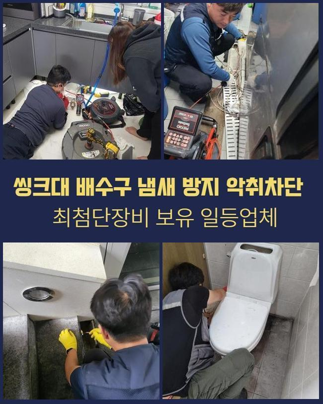
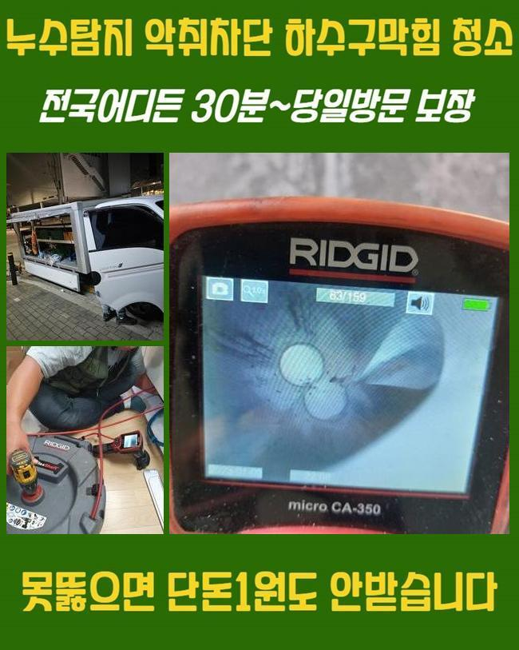
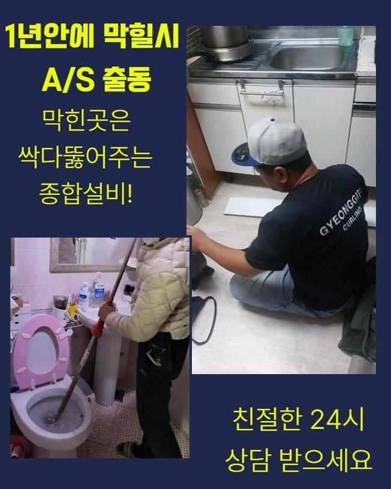
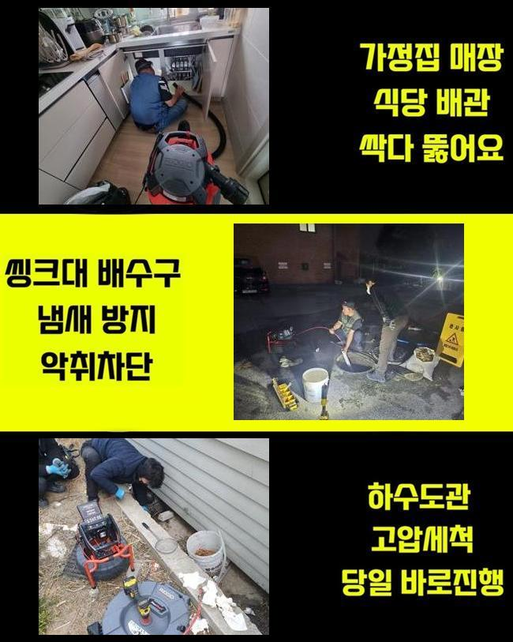
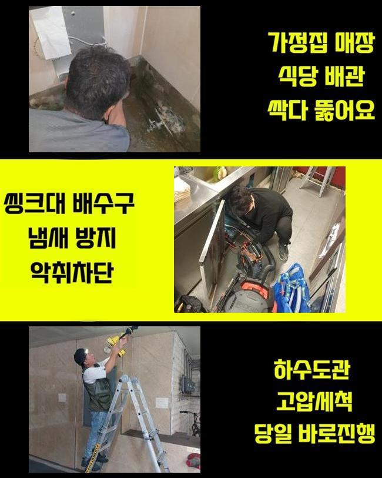
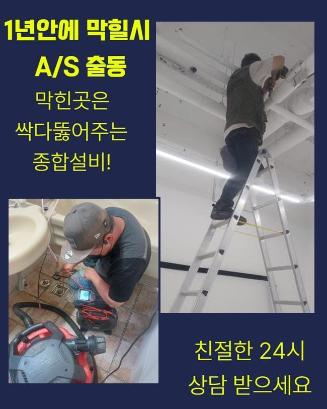
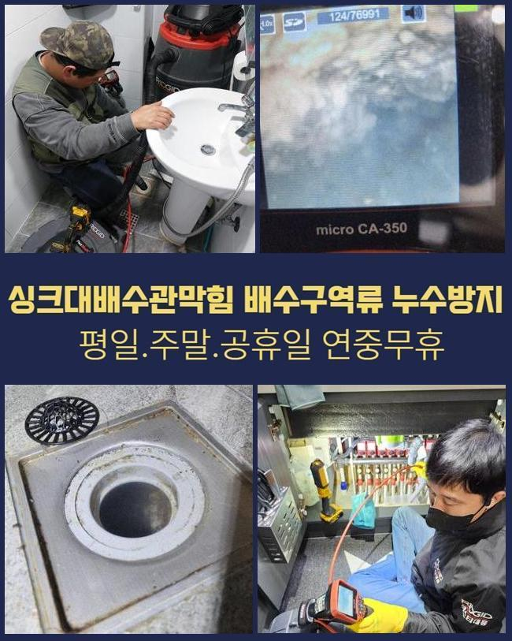

🏠 기장 창원 싱크대역류 천안 냄새차단 설비업체
천안 싱크대막힘 전문 시공 후기

📋 작업 개요
- 위치: 천안
- 서비스 유형: 싱크대막힘, 하수구막힘, 배관막힘, 역류해결, 뚫는업체, 배관청소, 악취차단
- 작업 일시: 2024. 11. 23. 22:14
- 업체명: 하수구수사대 (010-5615-2118)
🔍 문제 상황
기장 창원 싱크대역류 천안 냄새차단 설비업체
보통 배수구가 막혔다면 어떠한 방식으로 해결할 수 있을까요
흔히들 배수구가 막힌 상황에서 전문장비가 아닌 도구를 이용해서 오염물질을 빼보거나 산성이 강한 약을 사용합니다
이러한 도구들과 약품등은 하수라인의 문제를 해결하는 방식으로 무리가 있습니다
이렇게 예리한 물건으로 하수설비를 고쳐보려다 배수라인에 충격이 누적되어 배관이 망가지게 되며 배수라인을 전부 바꾸게 되는 경우까지 일어날 수 있어요
더군다나 독한 약제는 이물질로 가득한 하수라인을 오히려 악화시키며 계속적으로 이용할 경우 하수관 내벽이 녹아내려 전반적으로 모든 라인을 교체하게 되는 경우도 왕왕 있어요
개인적인 도구나 산성제품 사용시 안전하게 진행해야 합니다
저희 전문진에게 도움을 요청하신 의뢰인도 습관적으로 강한약을 이용하셨고 배수관에 문제가 생겨서 지독한 냄새가 난다고 연락주셨어요
인터넷에서 판매하는 약들은 전문적인 약품이 아니기때문에 실제 배수관의 막힘문제를 처리하는게 쉽지 않고 이용자의 제대로된 이해력과 기술이 없는경우 막힘이 해결될 것이라고 말씀 드릴 수가 없습니다
약물을 사용하여 일시적으로 문제점이 조금 나아진듯 하나 하수라인에 계속해서 영향을 주는 손상으로 인해서 심각한 문제들이 발생합니다

🔎 원인 분석
💡 전문가 진단: 정밀 진단 장비를 사용하여 슬러지의 고착 여부를 판명하고 타격/세척 작업을 실시했습니다.
이러한 약품을 쓰는 것으로는 석회질같이 딱딱한 침전물을 제거할 수 없어요
이런 약제로 처리하기 어렵다면 하수구가 막힌 상황을 해결하는 방법은 무엇일까요
배관이 꽉 막혀버린 경우 시공하는 작업을 자세하게 보여드리겠습니다
배수관이 막혀서 역류하고 있다는 전화를 받고나서 신속정확하게 현장에 방문했습니다
막힘사고를 그냥두면 연쇄적으로 문제가 심해지면서 썩는듯한 악취가 생기게 되므로 물이 잘 안내려가는 느낌이 들었을때 빠르게 전문가에게 도움을 요청하는게 가장 좋습니다
도착하자마자 하수관의 역류상황을 먼저 알 수 있었습니다
문제가 생긴 배관을 확인해봤지만 눈에 보이는 것만으로는 자세하게 확인할수 없으므로 배수구 안쪽 부분을 점검하기로 했어요
우선적으로 배수구 내시경기계를 이용했어요
내시경장비를 투입하면 막힘문제의 정확한 원인들을 모니터로 알아낼수 있으며 신속정확하게 작업과정을 선택할 수 있어요
내시경선을 배수관에 넣어서 영상을 확인하며 막힘문제의 이유와 배수관의 상태를 첫번째로 확인했어요

🔧 작업 과정
배수관 속을 살펴봤더니 석회질의 오염물질이 하수관을 막아버려서 하수가 흐르지 못하고 있는 상태였어요
의뢰인께 석회가루와 불순물이 배관속에 가득 쌓였다고 설명 드렸고 이후 과정을 말씀 드렸어요
내벽에 달라붙은 석회질을 파쇄하기 위해서 스케일링과정을 시작했어요
스케일링작업은 석회와 섞이며 단단해진 이물질을 파쇄시키는 방식으로 배수구 안쪽 부분을 청소하는 것이예요
샤프트기기를 활용해서 강력한 체인줄이 배수라인의 지름에 알맞게 작동되며 이물질을 모두 제거하며 하수관을 정상적으로 수리할 수 있었습니다
석회이물질이 생기는 이유로는 목욕시에 발생하는 이물질들이 덩어리도 굳어진 것입니다 시간이 흘러갈수록 겹겹이 쌓이면서 하수관을 막히게 하는 이유가 돼요
스케일링과정은 내시경기기를 활용해 배수라인을 모두 놓치는 부분없이 확인해요
가장 역류사태가 심했던 배관을 가장 먼저 뚫어내며 막힘상황을 해결 할 수 있었어요
작업이 진행되는 중간 중간 하수라인의 내부상태를 체크하며 이물질이 점점 제거되는걸 알 수 있었습니다
배수관에 소량씩 남아있는 침전물까지 마저 청소했습니다
조금이라도 불순물이 배수관에 남으면 나중에 막힘사고를 일으키므로 두번세번 작업을 반복합니다
잘게 부순 불순물을 없애고자서 석션기를 이용했습니다
석션장비를 사용해 석회가루를 모두 청소하고 배수관의 내부 부위를 최종적으로 점검했어요
배수관이 완벽하게 복구된걸 확인한 후에 물을 채워 한번에 내려보내며 정상적인 순환까지 점검을 완료했어요
한번에 가득 채운 물을 내려보내도 특이사항 없이 잘 내려갔고 배수라인에 상다량의 하수가 내려오며 역류하는 문제없이 통수가 원활했습니다
의뢰인분께 마지막으로 하수설비 이용에 도움이 되는 방법들을 말씀 드리고 작업 현장을 깔끔하게 정리했어요


✅ 작업 완료
저희 전문진이 깨끗하게 작업을 완료했으니 이후 하수라인을 사용하시면서 고객님들께서도 최대한 이물질이 들어가지 않게끔 사용과 관리에 노력이 필요합니다
하수구는 공간이 크지 않으므로 작은 불순물도 문제를 일으키게 됩니다
오늘처럼 비슷한 문제점으로 의뢰인분께서도 고생을 하고 계시다면 저희 업체로 지금 바로 연락주세요
내 일같은 마음으로 해결 해드리겠습니다




⚠️ 주방 싱크대 배관 막힘 예방 수칙
- ✅ 기름기가 묻은 식기나 프라이팬은 설거지 전 키친타올로 반드시 기름때를 닦아내세요.
- ✅ 주기적으로 싱크대 개수대에 뜨거운 물을 가득 받아 한 번에 내려 배관 내부 기름을 씻어내세요.
- ✅ 배수구 거름망을 미세한 필터로 사용하시고 음식물 찌꺼기가 틈으로 새어 들지 않게 관리하세요.
- ✅ 베이킹소다와 식초를 뜨거운 물과 함께 일주일에 한 번씩 부어주면 배관 살균과 막힘 예방에 좋습니다.
💡 핵심 정리
- 확실한 장비 작업(내시경 점검 및 샤프트 스케일링)으로 원인을 뿌리 뽑습니다.
- 작업 후 1년 이내에 동일한 부위 재발 시 100% 무상 A/S 서비스를 보장합니다.
- 서울 · 경기 · 인천 전 지역에 24시간 언제든 긴급 출동할 수 있도록 항시 대기 중입니다.
❓ 자주 묻는 질문 (FAQ)
🚨 천안 싱크대막힘 문제로 고민이신가요?
정확한 원인 진단과 확실한 시공으로 재발 없는 해결을 약속드립니다.
24시간 긴급 출동 | 서울 · 경기 · 인천 전지역 | 1년 내 재발 시 무상 A/S